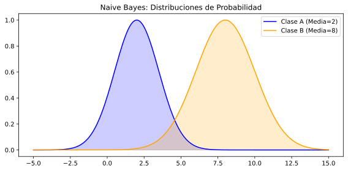

🤖 Unidad 5. Algoritmo de Bayes y Naive Bayes en Inteligencia Artificial
El algoritmo de Bayes, también conocido como Teorema de Bayes, es un enfoque probabilístico utilizado para la clasificación y el análisis en inteligencia artificial y aprendizaje automático. Este algoritmo se basa en la probabilidad condicional, lo cual permite actualizar la probabilidad de un evento en función de nueva evidencia.
 El algoritmo Naive Bayes simplifica el Teorema de Bayes haciendo una suposición fundamental: que todas las características (o atributos) son independientes entre sí. Esta simplificación permite construir modelos de clasificación rápidos y eficientes, especialmente útiles en aplicaciones de clasificación de texto, como la clasificación de correos electrónicos o el análisis de sentimientos.
A continuación, veremos en detalle cómo se deriva el modelo Naive Bayes a partir del Teorema de Bayes y cómo funciona, junto con ejemplos y las fórmulas matemáticas correspondientes.
1. Teorema de Bayes
El Teorema de Bayes describe la probabilidad de que ocurra un evento \( A \) dado que ya ha ocurrido otro evento \( B \). La fórmula se expresa de la siguiente manera:
Donde:
- \( P(A|B) \): Probabilidad de que ocurra el evento \( A \) dado que \( B \) ha ocurrido (probabilidad posterior).
- \( P(B|A) \): Probabilidad de que ocurra el evento \( B \) dado que \( A \) ha ocurrido (verosimilitud).
- \( P(A) \): Probabilidad a priori del evento \( A \).
- \( P(B) \): Probabilidad del evento \( B \).
El Teorema de Bayes permite actualizar la probabilidad a priori de un evento a partir de nueva información (evidencia).
2. Naive Bayes
El clasificador Naive Bayes se deriva del Teorema de Bayes con la suposición de independencia entre características. En lugar de considerar todas las relaciones posibles entre los atributos, se asume que cada característica es independiente de las demás, dado el resultado. Esto simplifica el cálculo de la probabilidad conjunta.
La probabilidad de que un ejemplo $$ x = (x_1, x_2, \dots, x_n) $$ pertenezca a una clase \( C_k \) se puede calcular como:
Dado que \( P(x) \) es constante para todas las clases, podemos simplificar la fórmula a:
Donde:
- P(C_k | x): Probabilidad posterior de que el ejemplo pertenezca a la clase C_k .
- P(C_k): Probabilidad a priori de la clase C_k.
- P(x_i | C_k): Probabilidad condicional de la característica x_i dada la clase C_k.
El clasificador Naive Bayes elige la clase que maximiza esta probabilidad posterior.
3. Tipos de Clasificadores Naive Bayes
Existen diferentes tipos de clasificadores Naive Bayes, dependiendo del tipo de datos y de cómo se calcula la probabilidad condicional:
- Naive Bayes Gaussiano: Se utiliza cuando las características tienen una distribución continua que se puede aproximar a una distribución normal (gaussiana).
- Naive Bayes Multinomial: Es adecuado para datos discretos, como el conteo de palabras en un documento. Es ampliamente utilizado en clasificación de texto.
- Naive Bayes Bernoulli: Se utiliza para características binarias. Es útil cuando cada característica es booleana (por ejemplo, si una palabra aparece o no en un documento).
Ejemplo en Python: Comparación de Tipos de Naive Bayes
from sklearn.datasets import load_iris, make_classification
from sklearn.model_selection import train_test_split, cross_val_score
from sklearn.naive_bayes import GaussianNB, MultinomialNB, BernoulliNB
from sklearn.preprocessing import StandardScaler, MinMaxScaler
import numpy as np
import matplotlib.pyplot as plt
# 1. GAUSSIAN NAIVE BAYES (para datos continuos)
print("=" * 50)
print("GAUSSIAN NAIVE BAYES (Datos Continuos)")
print("=" * 50)
# Cargar dataset Iris
iris = load_iris()
X_iris, y_iris = iris.data, iris.target
X_train, X_test, y_train, y_test = train_test_split(X_iris, y_iris, test_size=0.3, random_state=42)
# Entrenar Gaussian NB
gnb = GaussianNB()
gnb.fit(X_train, y_train)
y_pred_gnb = gnb.predict(X_test)
print(f"Accuracy: {accuracy_score(y_test, y_pred_gnb):.4f}")
print(f"Cross-validation score: {cross_val_score(gnb, X_iris, y_iris, cv=5).mean():.4f}")
# 2. MULTINOMIAL NAIVE BAYES (para datos discretos/conteos)
print("\n" + "=" * 50)
print("MULTINOMIAL NAIVE BAYES (Datos Discretos)")
print("=" * 50)
# Generar datos discretos (ejemplo: conteo de palabras)
from sklearn.datasets import fetch_20newsgroups
from sklearn.feature_extraction.text import CountVectorizer
# Cargar subset de noticias
categories = ['alt.atheism', 'soc.religion.christian', 'comp.graphics', 'sci.med']
news_train = fetch_20newsgroups(subset='train', categories=categories, random_state=42)
news_test = fetch_20newsgroups(subset='test', categories=categories, random_state=42)
# Vectorizar textos
vectorizer = CountVectorizer(max_features=1000)
X_train_counts = vectorizer.fit_transform(news_train.data)
X_test_counts = vectorizer.transform(news_test.data)
# Entrenar Multinomial NB
mnb = MultinomialNB(alpha=1.0)
mnb.fit(X_train_counts, news_train.target)
y_pred_mnb = mnb.predict(X_test_counts)
print(f"Accuracy: {accuracy_score(news_test.target, y_pred_mnb):.4f}")
print("\nEjemplos de predicciones:")
for i in range(3):
print(f"\nTexto: {news_test.data[i][:100]}...")
print(f"Real: {news_train.target_names[news_test.target[i]]}")
print(f"Predicho: {news_train.target_names[y_pred_mnb[i]]}")
# 3. BERNOULLI NAIVE BAYES (para datos binarios)
print("\n" + "=" * 50)
print("BERNOULLI NAIVE BAYES (Datos Binarios)")
print("=" * 50)
# Convertir a binario (presencia/ausencia de palabras)
from sklearn.feature_extraction.text import TfidfVectorizer
from sklearn.preprocessing import Binarizer
vectorizer_bin = CountVectorizer(max_features=1000, binary=True)
X_train_binary = vectorizer_bin.fit_transform(news_train.data)
X_test_binary = vectorizer_bin.transform(news_test.data)
# Entrenar Bernoulli NB
bnb = BernoulliNB(alpha=1.0)
bnb.fit(X_train_binary, news_train.target)
y_pred_bnb = bnb.predict(X_test_binary)
print(f"Accuracy: {accuracy_score(news_test.target, y_pred_bnb):.4f}")
# Comparación visual
modelos = ['Gaussian NB\n(Iris)', 'Multinomial NB\n(Text)', 'Bernoulli NB\n(Text Binary)']
accuracies = [
accuracy_score(y_test, y_pred_gnb),
accuracy_score(news_test.target, y_pred_mnb),
accuracy_score(news_test.target, y_pred_bnb)
]
plt.figure(figsize=(10, 6))
plt.bar(modelos, accuracies, color=['skyblue', 'lightgreen', 'salmon'])
plt.ylabel('Accuracy')
plt.title('Comparación de Tipos de Naive Bayes')
plt.ylim([0, 1])
for i, acc in enumerate(accuracies):
plt.text(i, acc + 0.02, f'{acc:.4f}', ha='center', fontweight='bold')
plt.grid(True, alpha=0.3, axis='y')
plt.show()
4. Ejemplo Completo de Naive Bayes
Vamos a clasificar correos electrónicos como "spam" o "no spam" usando el algoritmo de Naive Bayes. Para este ejemplo, supongamos que tenemos los siguientes datos de entrenamiento, con algunas palabras clave y la clase correspondiente ("spam" o "no spam"):
| Correo ID | Contenido | Clase |
|---|---|---|
| 1 | Oferta barata, gana dinero | Spam |
| 2 | Proyecto pendiente de trabajo | No Spam |
| 3 | Oferta especial gratis | Spam |
| 4 | Reunión de equipo mañana | No Spam |
| 5 | Gana premios y dinero ahora | Spam |
| 6 | Informe mensual adjunto | No Spam |
Vamos a suponer que queremos clasificar un nuevo correo con el contenido: "Oferta gratis y premios". Para esto, usaremos el clasificador de Naive Bayes, asumiendo que todas las palabras son independientes (el supuesto "naive").
Paso 1: Calcular las Probabilidades Previas
Primero calculamos la probabilidad previa de cada clase.
- Probabilidad de Spam (π(spam)):
$$ P(Spam) = \frac{N_{Spam}}{N_{Total}} = \frac{3}{6} = 0.5 $$
- Probabilidad de No Spam (π(no_spam)):
$$ P(No\,Spam) = \frac{N_{No\,Spam}}{N_{Total}} = \frac{3}{6} = 0.5 $$
Paso 2: Calcular la Probabilidad de Cada Palabra
Ahora, necesitamos calcular la probabilidad de cada palabra en el contexto de cada clase (es decir, "spam" y "no spam"). Las palabras únicas en nuestro conjunto de entrenamiento son:
- "oferta", "barata", "gana", "dinero", "proyecto", "pendiente", "trabajo", "especial", "gratis", "reunión", "equipo", "mañana", "premios", "ahora", "informe", "mensual", "adjunto".
Vamos a usar suavizado de Laplace (adicionando 1 a cada recuento) para evitar probabilidades de cero.
Por ejemplo, calculamos la probabilidad de cada palabra para spam:
- P(oferta | Spam):
La palabra "oferta" aparece en 2 de los 3 correos spam.
$$ P(oferta \mid Spam) = \frac{2 + 1}{N_{Spam} + V} = \frac{2 + 1}{3 + 17} = \frac{3}{20} = 0.15 $$
- P(gratis | Spam) y P(premios | Spam) también se calculan de manera similar.
Donde:
- \(N_{Spam}\) : Número de correos spam.
- V : Número de palabras únicas en el vocabulario.
Paso 3: Clasificar el Nuevo Correo
El nuevo correo es: "Oferta gratis y premios". Queremos calcular la probabilidad de que sea spam o no spam.
Para calcular esto, usamos la fórmula de Naive Bayes:
Primero calculamos la probabilidad de que el correo sea spam:
Sustituimos los valores y multiplicamos:
Hacemos el mismo cálculo para No Spam y comparamos ambas probabilidades.
Paso 4: Decisión
Finalmente, elegimos la clase que tiene la probabilidad mayor. Si $ P(Spam \mid X) $ es mayor que $ P(No\,Spam \mid X) $, clasificamos el correo como spam; de lo contrario, como no spam.
Implementación Completa en Python
import numpy as np
import pandas as pd
from sklearn.feature_extraction.text import CountVectorizer
from sklearn.naive_bayes import MultinomialNB
from sklearn.model_selection import train_test_split
from sklearn.metrics import accuracy_score, classification_report, confusion_matrix
# Dataset de ejemplo para clasificación de spam
emails = [
"Oferta barata, gana dinero",
"Proyecto pendiente de trabajo",
"Oferta especial gratis",
"Reunión de equipo mañana",
"Gana premios y dinero ahora",
"Informe mensual adjunto",
"Oferta gratis y premios",
"Reporte trimestral listo",
"Gana dinero fácil ahora",
"Agenda de la reunión",
"Premio gratis para ti",
"Proyecto finalizado exitosamente",
"Oferta exclusiva barata",
"Calendario de entregas",
"Dinero rápido y fácil"
]
labels = [1, 0, 1, 0, 1, 0, 1, 0, 1, 0, 1, 0, 1, 0, 1] # 1=Spam, 0=No Spam
# Convertir texto a vectores numéricos (Bag of Words)
vectorizer = CountVectorizer()
X = vectorizer.fit_transform(emails)
print("Vocabulario:")
print(vectorizer.get_feature_names_out())
print(f"\nForma de la matriz: {X.shape}")
print(f"Ejemplo de vectorización del primer email:")
print(X[0].toarray())
# Dividir datos
X_train, X_test, y_train, y_test = train_test_split(X, labels, test_size=0.3, random_state=42)
# Entrenar Naive Bayes Multinomial
nb_model = MultinomialNB(alpha=1.0) # alpha es el parámetro de suavizado de Laplace
nb_model.fit(X_train, y_train)
# Predicciones
y_pred = nb_model.predict(X_test)
y_pred_proba = nb_model.predict_proba(X_test)
# Evaluación
print(f"\nAccuracy: {accuracy_score(y_test, y_pred):.4f}")
print("\nReporte de Clasificación:")
print(classification_report(y_test, y_pred, target_names=['No Spam', 'Spam']))
# Probar con un nuevo correo
nuevo_email = ["Oferta gratis y premios"]
nuevo_email_vec = vectorizer.transform(nuevo_email)
prediccion = nb_model.predict(nuevo_email_vec)[0]
proba = nb_model.predict_proba(nuevo_email_vec)[0]
print(f"\nNuevo email: '{nuevo_email[0]}'")
print(f"Predicción: {'Spam' if prediccion == 1 else 'No Spam'}")
print(f"Probabilidades: No Spam={proba[0]:.4f}, Spam={proba[1]:.4f}")
# Mostrar las probabilidades aprendidas por el modelo
print("\nPalabras más indicativas de Spam:")
feature_names = vectorizer.get_feature_names_out()
log_probs = nb_model.feature_log_prob_
spam_probs = np.exp(log_probs[1]) # Clase 1 (Spam)
top_spam_indices = np.argsort(spam_probs)[-5:][::-1]
for idx in top_spam_indices:
print(f" {feature_names[idx]}: {spam_probs[idx]:.4f}")
5. Aplicaciones Reales de Naive Bayes
Debido a su eficiencia y capacidad para manejar grandes volúmenes de datos, Naive Bayes se utiliza en una amplia variedad de aplicaciones del mundo real:
- Filtrado de Spam: Es el uso más clásico. Servicios como Gmail o Outlook utilizan variantes de Naive Bayes para clasificar correos entrantes como deseados o no deseados basándose en la frecuencia de ciertas palabras.
- Ejemplo de implementación de filtro Spam
- Análisis de Sentimientos: Determinar si una opinión en redes sociales (Twitter, reseñas de productos) es positiva, negativa o neutral. Es muy usado en marketing para monitorear la reputación de marca.
- Análisis de sentimientos en Twitter
- Clasificación de Documentos: Organizar noticias en categorías (Deportes, Política, Tecnología) o clasificar documentos legales y médicos.
- Sistemas de Recomendación: Filtrado colaborativo para predecir si a un usuario le gustará un recurso dado.
6. Ventajas y Limitaciones de Naive Bayes
- Ventajas:
- Simplicidad y rapidez: Naive Bayes es simple de implementar y muy rápido para entrenar y hacer predicciones, incluso con grandes volúmenes de datos.
- Escalabilidad: Funciona bien con datos de alta dimensionalidad, como texto.
-
Robustez frente al ruido: A pesar de la suposición de independencia, suele funcionar sorprendentemente bien en muchos problemas reales.
-
Limitaciones:
- Suposición de independencia: La suposición de independencia rara vez se cumple en problemas reales. Esto puede llevar a predicciones menos precisas cuando las características están altamente correlacionadas.
- Problemas con datos cero: Si una característica no se presenta en los datos de entrenamiento, la probabilidad condicional se convierte en cero, lo que hace que la probabilidad posterior también sea cero. Esto se suele solucionar con la suavización de Laplace.
El clasificador Naive Bayes sigue siendo una herramienta poderosa para muchas aplicaciones de inteligencia artificial y aprendizaje automático, especialmente en la clasificación de texto y otros problemas donde la independencia de las características no afecta significativamente el rendimiento del modelo.